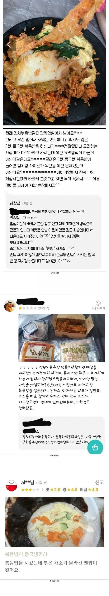

전설의 배달 볶음밥 3대장
댓글
저렇게 음식을 좆으로 아는 애들은 진짜 혼나야됨
3대장 각각이 너무 세서 우열을 가릴 수가 없음
양꼬치집에서 시키는 볶음밥이 존맛임 동네중국집 다 바르더라
홀장사 안하는집은 걸러야댐
홀장사하는데나 홀장사만 하는데를 가야해
저래도 점수3점 준거는 볶음채소가 맛있다는건가..
맛 2점인 거 보면 아닌 듯. 양이 4점인데, 가격 대비 양은 많았나 봐.
그나마 두번째꺼가 젤 맛있을듯
위생과 맛은 다 챙긴 2번.
유일하게 안챙긴건 손님을 안챙김.
볶음밥 유관장 ㅋㅋㅋ
저따구로 하고 다음에 이지랄하고 있네
다음이 어딨어!
진짜 개병상같아
하나같이 "다음에" ㅋㅋ
사람새끼가 어떻게 저러는지 장사를 하면 병신이 되나 지가 사서 쳐먹은 경험이 분명있을건데
사장들 반응이 "이건 내가 봐도 심했다ㅋ" 같네
2번은 근데 요즘 저렇게오면 ㄱㅊ은거같기도 워낙 물가가 비싸서그런감
저중에 2번이 제일 양반이네
당장에 작은 손실 만회하려고 업장의 명운을 걸어버림
아무나 할 수 있는 직종특) 하방에 끝이없다
???:자영업자 죽는다 소시민 죽는다!
경지들이 장사하는건가?
쟤들도 망하면 남탓 하겠지?
계란국에 테두리 갈색 계란후라이의 고슬고슬한 볶음밥이지 !!!!